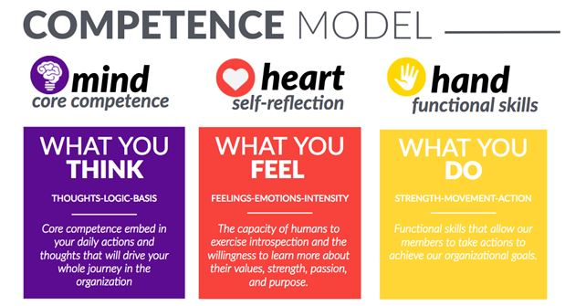

Recruiting
2020.2 신입회원 모집 안내
👋 안녕하세요! 성균관대학교 국제리더십학생협회 AIESEC SKKU입니다. 저희는 성균관대학교 내의 동아리이자 유엔(UN) 연합 비영리 청년단체로, 지속가능한개발목표(SDGs)에 따라 평화와 인간잠재력 실현을 위해 노력하는 국제학생협회입니다. 2020년도 2학기를 맞이하여 신입회원을 모집합니다.
1. AIESEC in SKKU 2021 Term 하반기 주요 필수 활동
매주 목요일 18-20시 진행.
📢 FM(Functional Meeting, 부서별 회의): 18-19시
📢 LCM(Local Committee Meeting, 동아리 전체 모임): 19-20시
지난 1학기에 모든 활동은 온라인으로 진행되었습니다. 이번 2학기 활동은 온라인과 오프라인으로 활동이 병행될 예정입니다.
오프라인으로 활동이 진행될 시, 성균관대학교 인문사회과학캠퍼스 인근에서 진행될 예정입니다.
2. 하반기 신입회원 모집 안내
⏰ 홍보전략부서인 MKT, 해외교류중개부서인 oGX 두 부서에서 신입회원을 모집합니다.
➊ 지원방법: 1) QR코드
2) 페이스북 AIESEC SKKU
3) 인스타그램 aiesec_skku
1st Round: 2020년 08월 17일(월) 오전 9:00 – 08월 23일(일) 11:59:59
2nd Round 2020년 08월 24일(월) 오전 9:00 – 08월 30일(일) 11:59:59
(지원 구글 폼인 Application Form은 2주 동안, 두 차례에 걸쳐서 오픈될 예정입니다.)
2020년 08월 31일(월) – 09월 01일(화) (추후 조정될 수 있습니다.)
면접 시간과 장소는 1차 합격자(Application Form)에 한해, 추후에 개별 연락처로 공지드릴 예정입니다.
지부장_권민정(19학번 영어영문학과): 010-6231-3230
인재관리부서장_전효림(19학번 문헌정보학과): 010-6479-1512
AIESEC in SKKU의 공식 SNS채널인 인스타그램(aiesec_skku)과 페이스북(AIESEC SKKU)에 리쿠르팅과 관련된 게시글이 업로드 될 예정입니다. 많은 관심 부탁드립니다.
▲ AIESECer가 되고 싶다면 망설이지 말고 지원하세요!
3. AIESEC이 원하는 Persona(인재상)
AIESEC은 6가지의 가치에 기본을 둔 Persona(인재상)를 추구하는 단체입니다.

▲ AIESEC 6 Values

▲ AIESEC Competence Model(역량모델)
이 모든 것들은 AIESEC의 문화를 만드는 공유된 가치와 행동입니다.
이 가치들은 AIESECer로서 우리의 매일의 행동과 결정을 내릴 때에 가이드가 되어줍니다.
- NOW or NEVER, AIESEC SKKU